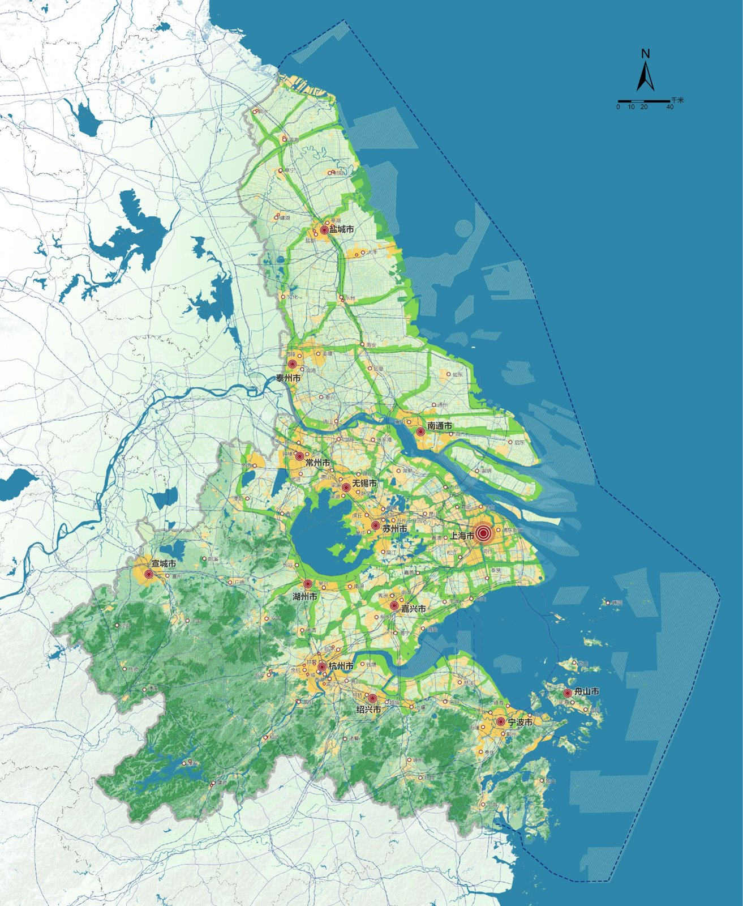

SHANGHAI METROPOLITAN AREA / REGIONAL SPATIAL PLANNING
A Region of Cities
Regional structures across administrative boundaries.

A network of centers
The planning region connects Shanghai with cities across Jiangsu, Zhejiang, and Anhui. Shared landscapes and city networks provide a framework for relationships across administrative boundaries.
Regional structure and subregional strategies
The work combines metropolitan spatial structure with strategies for Hangzhou Bay and Tai Lake. Development corridors link urban centers, while ecological systems and landscape connections help organize the wider region.
PORTFOLIO
Project 03 / Pages 13–16. Academic and professional work portfolio.